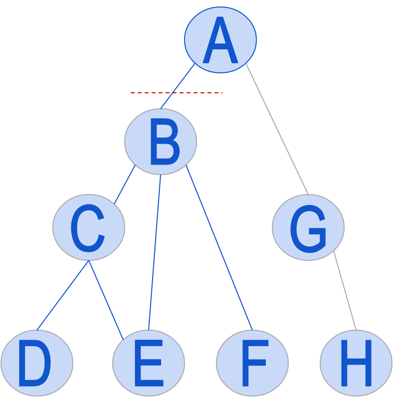
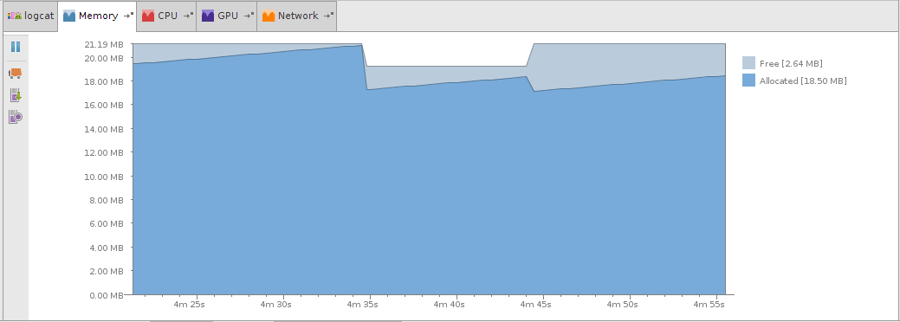
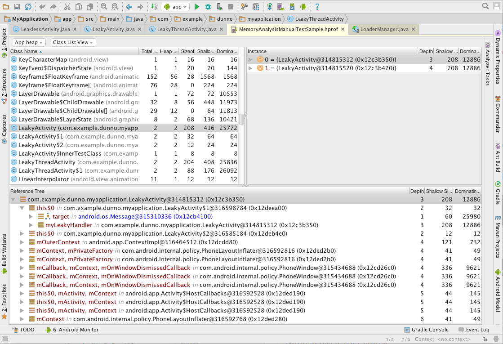
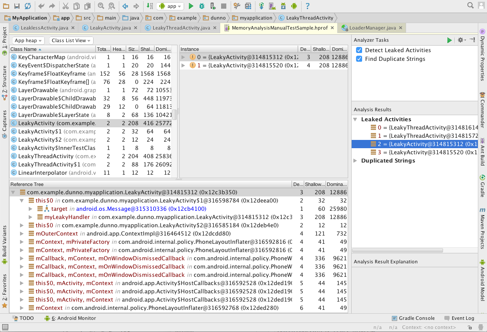
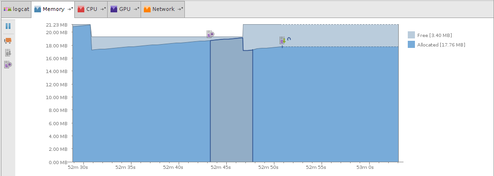
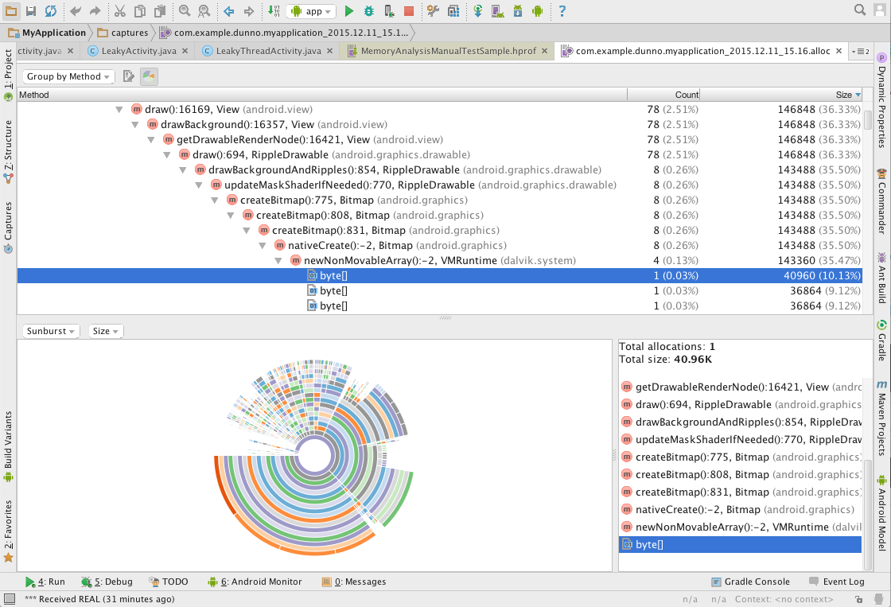

In this document
- Memory Monitor Workflow
- Displaying a Running App in the Memory Monitor
- Forcing a Garbage Collection Event
- Dumping and Analyzing the Java Heap
- Taking and displaying a snapshot of the Java heap
- Diving into heap dump data in the HPROF Viewer
- Analyzing heap dump data in the HPROF Analyzer
- Sorting heap dump data
- Displaying Java source
- Viewing a saved HPROF file
- Renaming an HPROF file
- Locating a heap dump file on disk
- Deleting a heap dump file
- Converting a heap dump file to standard HPROF format
- Tracking and Analyzing Memory Allocation
See also
- Managing Your App's Memory
- Addressing Garbage Collection Issues
- Investigating Your RAM Usage
- Android Monitor
- logcat Monitor
- CPU Monitor
- GPU Monitor
- Network Monitor
Dependencies and Prerequisites
- Make sure your development computer detects your hardware device, which often happens automatically when you connect it to a USB port.
- Enable USB debugging in Developer Options on the device or emulator.
- In your app, set the
debuggableproperty totruein the manifest orbuild.gradlefile (it’s initially set by default). - Enable ADB integration through Tools > Android > Enable ADB Integration.
- Android Device Monitor can’t be running.
Android Studio provides a Memory Monitor so you can more easily monitor app performance and memory usage to find deallocated objects, locate memory leaks, and track the amount of memory the connected device is using. The Memory Monitor reports how your app allocates memory and helps you to visualize the memory your app uses. It lets you:
- Show a graph of available and allocated memory over time.
- Show garbage collection (GC) events over time.
- Initiate garbage collection events.
- Quickly test whether app slowness might be related to excessive garbage collection events.
- Quickly test whether app crashes may be related to running out of memory.
Memory Monitor Workflow
To profile and optimize memory use, the typical workflow is to run your app and do the following:
- Profile the app using the Memory Monitor to find out whether undesirable garbage collection event patterns might be causing performance problems.
- If you see many garbage collection events in a short amount of time, dump the Java heap to identify candidate object types that get or stay allocated unexpectedly or unnecessarily.
- Start allocation tracking to determine where any problems are happening in your code.
The Java heap data shows in real-time what types of objects your application has allocated, how many, and their sizes on the heap. Viewing the heap helps you to:
- Get a sense of how your app allocates and frees memory.
- Identify memory leaks.
Allocation tracking records app memory allocations and lists all allocations for the profiling cycle, including the call stack, size, and allocating code. It helps you to:
- Identify where many similar object types, from roughly the same call stack, are allocated and deallocated over a very short period of time.
- Find the places in your code that may contribute to inefficient memory use.
Garbage collection roots and dominator trees
When you dump the Java heap, the Memory Monitor creates an Android-specific Heap/CPU Profiling (HPROF) file that you can view in the HPROF Viewer. The HPROF Viewer indicates a garbage collection root with the icon (and a depth of zero) and a dominator with the icon.
There are several kinds of garbage collection roots in Java:
- references on the stack
- Java Native Interface (JNI) native objects and memory
- static variables and functions
- threads and objects that can be referenced
- classes loaded by the bootstrap loader
- finalizers and unfinalized objects
- busy monitor objects
The HPROF file provides the list of roots to the HPROF Viewer.
A dominator tree traces paths to objects created by the app. An object dominates another object if the only way to reach the other object is, directly or indirectly, through the dominator object. When you examine objects and paths created by an app in an effort to optimize memory use, try to remove objects that are no longer needed. You can release a dominator object to release all subordinate objects. For example, in the following figure, if you were to remove object B, that would also release the memory used by the objects it dominates, which are objects C, D, E, and F. In fact, if objects C, D, E, and F were marked for removal, but object B was still referring to them, that could be the reason that they weren’t released.
Memory leak and use analysis
An app performs better if it uses memory efficiently and releases the memory when it’s no longer needed. Memory leaks that are large or that grow over time are the most important to correct.
One way to optimize memory usage is to analyze large arrays. For example, can you reduce the size of individual elements in the array to save memory? Does a dominator object point to an element in the array, preventing it from being garbage-collected? If the dominator object directly points to an element in the array, the dominator is either the contiguous memory representing the underlying data of the array, some part of the array, or the array itself.
Another area that deserves attention is objects that the app no longer needs but continues to reference. You can gather heap dumps over different periods of time and compare them to determine if you have a growing memory leak, such as an object type that your code creates multiple times but doesn’t destroy. These objects could be part of a growing array or an object tree, for example. To track down this problem, compare the heap dumps and see if you have a particular object type that continues to have more and more instances over time.
Continually growing object trees that contain root or dominator objects can prevent subordinate objects from being garbage-collected. This issue is a common cause of memory leaks, out-of-memory errors, and crashes. Your app could have a small number of objects that are preventing a large number of subordinate objects from being destroyed, so it runs out of memory quickly. To find these issues, get a heap dump and examine the amount of memory held by root and dominator objects. If the memory is substantial, you’ve likely found a good place to start optimizing your memory use.
As you start narrowing down memory issues, you should also use the Allocation Tracker to get a better understanding of where your memory-hogging objects are allocated. The Allocation Tracker can be valuable not only for looking at specific uses of memory, but also for analyzing critical code paths, such as loading and scrolling. For example, tracking allocations when flinging a list in your app allows you to see all of the allocations that need to be done for that behavior, what thread they are on, and where they came from. This information is extremely valuable for tightening up these paths to reduce the work they need and improve the overall smoothness of the UI.
It’s useful to examine your algorithms for allocations that are unnecessary or that create the same object many times instead of reusing them. For example, do you create temporary objects and variables within recursive loops? If so, try creating an object or variable before the loop for use within the loop. Otherwise, your app might needlessly allocate many objects and variables, depending on the number of recursions.
It’s important to perform allocation tests on portions of your code that create the most and largest objects, as those areas offer the most optimization opportunities. In addition to unit tests, you should test your app with production-realistic data loads, especially those algorithms that are data-driven. Also, make sure to account for the app caching and startup phase, which can sometimes be slow; allocation analysis is best done after that phase to produce accurate results.
After you optimize code, be sure to test that it worked. You need to test under different load conditions and also without running the Memory Monitor tools. Compare results before and after optimization to make sure that performance has actually improved.
Memory management for different virtual machines
Android Monitor uses the Virtual Machine (VM) that the device or emulator uses:
- Android 4.3 (API level 18) and lower uses the Dalvik VM.
- In Android 4.4 (API level 19), the Android RunTime (ART) VM is an option, while the Dalvik VM is the default.
- Android 5.0 (API level 21) and higher uses the ART VM.
The VM handles garbage collection. The Dalvik VM uses a mark-and-sweep scheme for garbage collection. The ART VM uses a generational scheme, combined with mark-and-sweep when memory needs a more thorough garbage collection, such as when memory becomes excessively fragmented. The logcat Monitor displays some messages that indicate the type of garbage collection that occurred and why.
Memory Monitor results can vary between the different VMs. As a result, if you’re supporting both VMs, you might want to test with both. In addition, the VMs available for different API levels can have different behavior. For example, the Dalvik VM in Android 2.3 (API level 10) and lower uses externally allocated memory while higher versions allocate in the Dalvik heap only.
You can’t reconfigure the Dalvik and ART VMs to tune performance. Instead, you should examine your app code to determine how to improve its operation, for example, reducing the size of very large arrays.
There are programmatic ways to manipulate when the VM performs garbage collection, although it’s not a best practice. These techniques can be specific to the VM. For more information, see Addressing Garbage Collection (GC) Issues and Investigating Your RAM Usage.
The ART VM adds a number of performance, development, and debugging improvements over the Dalvik VM. For more information, see ART and Dalvik.
Displaying a Running App in the Memory Monitor
Follow these steps:
- Optionally connect a hardware device.
- Display Android Monitor.
- Click the Memory tab.
- Open an app project and run it on a hardware device or emulator.
- Enable the Memory Monitor by clicking Pause to deselect it.
- Interact with your app and watch how it affects memory usage in the Memory Monitor. You can identify garbage collection patterns for your app and determine whether they are healthy and what you expect.
- Excessive garbage collection events slow down the app.
- The app runs out of memory, which causes it to crash.
- Potential memory leaks.
- Your app is static, but you see memory being allocated in the monitor.
- You see spikes of memory allocations in the monitor, but you don’t think there’s any app logic to cause this behavior.
- To stop the Memory Monitor, click Pause again to select it.
In the graph, the y-axis displays the free and allocated RAM in megabytes. The x-axis shows the time elapsed; it starts with seconds, and then minutes and seconds, and so on. The amount of free memory, measured in megabytes, is shown in a light color, and allocated memory is a darker color. When there’s a sharp drop in allocated memory, that indicates a garbage collection event.
To force a garbage collection event, click Initiate GC .
In the following figure, the VM initiated the first garbage collection event, while the developer forced the second.
The graph can show you potential issues:
For example, you might see the following signs of problems:
Forcing a Garbage Collection Event
Normally, VMs perform garbage collection only when absolutely needed, since it’s expensive. However, it can be useful to force garbage collection in certain circumstances. For example, when locating memory leaks, if you want to determine whether a large object was successfully released already, you can initiate garbage collection much more aggressively than usual.
To force a garbage collection event:
- While the Memory Monitor is running, click Initiate GC .
Dumping and Analyzing the Java Heap
When you're monitoring memory usage in Android Studio you can, at the same time, dump the Java heap to a heap snapshot in an Android-specific HPROF binary format file. The HPROF Viewer displays classes, instances of each class, and a reference tree to help you track memory usage and find memory leaks. HPROF is a heap dump format originally supported by J2SE.
The Java heap display does the following:
- Shows snapshots of a number of objects allocated by type.
- Samples data every time a garbage collection event occurs naturally or is triggered by you.
- Helps identify which object types might be involved in memory leaks.
However, you have to look for changes over time yourself by tracking what's happening in the graph.
The HPROF Analyzer finds the following potential issues:
- All destroyed activity instances that are reachable from garbage collection roots.
- Where the target program has strings that repeat values.
A dominator is at the top of a tree. If you remove it, you also remove the branches of the tree it dominates, so it’s a potential way to free memory.
Taking and displaying a snapshot of the Java heap
To see a snapshot of the Java heap, follow these steps:
- While the Memory Monitor is running, click Dump Java Heap .
- Click Captures in the main window.
- Double-click the file to view it in the HPROF Viewer.
- Select the Heap menu option you want to display:
- App heap - The heap used by the current app.
- Image heap - The memory mapped copy of the current app on disk.
- Zygote heap - The common set of libraries and runtime classes and data that all apps are forked from. The zygote space is created during device startup and is never allocated into.
- Select the View menu option you want to display:
- Class List View
- Package Tree View
When the icon on the Memory Monitor display changes from
to
, the file is ready. Android Studio creates the heap snapshot
file with the
filename Snapshot_yyyy.mm.dd_hh.mm.ss.hprof using
the year, month, day, hour, minute, and second of the capture, for example,
Snapshot_2015.11.17_14.58.48.hprof.
The Captures window appears.
The HPROF Viewer appears:
The tool displays the following information:
| Column | Description |
|---|---|
| Class Name | The Java class responsible for the memory. |
| Total Count | Total number of instances outstanding. |
| Heap Count | Number of instances in the selected heap. |
| Sizeof | Size of the instances (currently, 0 if the size is variable). |
| Shallow Size | Total size of all instances in this heap. |
| Retained Size | Size of memory that all instances of this class is dominating. |
| Instance | A specific instance of the class. |
| Reference Tree | References that point to the selected instance, as well as references pointing to the references. |
| Depth | The shortest number of hops from any GC root to the selected instance. |
| Shallow Size | Size of this instance. |
| Dominating Size | Size of memory that this instance is dominating. |
Diving into heap dump data in the HPROF Viewer
The following steps outline the typical workflow:
- In the HPROF viewer, select a class name.
- Select an instance of that class.
- Examine the reference tree.
- Right-click an item to Jump to source or Go to instance, as needed.
Analyzing heap dump data in the HPROF Analyzer
You can detect leaked activities and find duplicate strings with the HPROF Analyzer. Follow these steps:
- In the Captures window, double-click an
.hproffile to display it in the HPROF Viewer. - Click Capture Analysis on the right side of the main Android Studio window.
- In the Analyzer Tasks list, select the items you want to find.
- Click Perform Analysis .
- Examine the items in Analysis Results. Click an item to display it in the HPROF Viewer.
The HPROF Analyzer appears to the right of the HPROF Analyzer, by default:
Sorting heap dump data
Follow this step:
- In the HPROF Viewer, click a column heading to sort the table by ascending or descending order.
Displaying Java source
For some items displayed in the HPROF Viewer, you can go straight to its source code. Follow this step:
- In the HPROF Viewer, right-click a class, instance, or item in the reference tree, and then select Jump to Source.
The source code appears in the Code Editor.
Viewing a saved HPROF file
After you do a heap dump, Android Studio automatically stores it so you can view it again. Follow these steps:
- Click Captures in the main window.
- Open the Heap Snapshot folder.
- Double-click the file to view it.
The Captures window appears.
Renaming an HPROF file
If you rename a file from within Android Studio, it continues to appear in Captures window. Follow these steps:
- In the Captures window, right-click the file and select Rename.
- In the dialog, specify the name of the file and click OK.
Locating a heap dump file on disk
You can quickly discover where Android Studio stored HPROF files on disk.
Follow this step in Android Studio:
- In the Captures window, right-click a heap snapshot file and select Show in files.
Android Studio opens an operating system file browser displaying the location where the file resides.
Note: If you move an HPROF file, Android Studio no longer displays it in the Captures window. To display it, use File > Open. Also, if you want to rename the file, do it from the Captures window and not in the operating system file browser.
Deleting a heap dump file
To delete a heap dump file, follow this step:
- In the Captures window, right-click a heap snapshot file and select Delete.
Android Studio deletes the file from the Captures dialog and from disk.
Converting a heap dump file to standard HPROF format
You can convert an HPROF file to standard format so you can use it outside of Android Studio with other analysis tools. Follow these steps:
- In the Captures window, right-click a heap snapshot file and select Export to standard .hprof.
- In the Convert Android Java Heap Dump dialog, specify a filename and click OK.
Android Studio creates a binary HPROF file in the location you specified.
Tracking and Analyzing Memory Allocation
Android Studio allows you to track memory allocation as it monitors memory use. Tracking memory allocation allows you to monitor where objects are being allocated when you perform certain actions. Knowing these allocations enables you to adjust the method calls related to those actions to optimize app performance and memory use.
The Allocation Tracker does the following:
- Shows when and where your code allocates object types, their size, allocating thread, and stack traces.
- Helps recognize memory churn through recurring allocation/deallocation patterns.
- Help you track down memory leaks when used in combination with the HPROF Viewer. For example, if you see a bitmap object resident on the heap, you can find its allocation location with Allocation Tracker.
However, it takes time and experience to learn to interpret the output from this tool.
Taking and displaying a snapshot of allocation data
Follow these steps:
- While the Memory Monitor is running, click Start Allocation Tracking .
- Click Start Allocation Tracking again to deselect it and end the snapshot.
- Click Captures in the main window.
- Double-click the file to view it in the Allocation Tracker.
- Optionally click the graphic icon to display a visual representation of the data.
- Select the Group By menu option you want to display:
- Group by Allocator
- Group by Method
The Memory Monitor displays the period when it took the snapshot. In the following figure, you can see the snapshot period, as shown on the left. By comparison, when you dump the Java heap, the Memory Monitor displays just the point where the heap snapshot was taken, as shown on the right.
Android Studio creates the heap snapshot file with the
filename Allocations_yyyy.mm.dd_hh.mm.ss.alloc using the year, month, day,
hour, minute, and second of the capture, for example,
Allocations_2015.11.17_14.58.48.alloc.
The Captures window appears.
The Allocation Tracker appears:

The tool displays the following information:
| Column | Description |
|---|---|
| Method | The Java method responsible for the allocation. |
| Count | Total number of instances allocated. |
| Size | The total amount of allocated memory in bytes. |
Sorting allocation data
Follow this step:
- In the Allocation Tracker, click a column heading to sort the table by ascending or descending order.
Displaying Java source
For some items displayed in the Allocation Tracker, you can view the Java source. Follow one of these steps:
- In the Allocation Tracker, right-click a method and then select Jump to Source.
- In the Allocation Tracker, select a method and then click Jump to Source .
The source code appears in the Code Editor.
Viewing a saved allocation tracking file
After you monitor allocation tracking, Android Studio automatically stores it so you can view it again. Follow these steps:
- Click Captures in the main window.
- Open the Allocation Tracking folder.
- Double-click the file to view it.
The Captures window appears.
Renaming an allocation tracking file
If you rename a file from within Android Studio, it continues to appear in the Captures window. Follow these steps:
- In the Captures window, right-click the file and select Rename.
- In the Rename dialog, specify the name of the file and click OK.
Locating an allocation tracking file
You can quickly discover where Android Studio stored allocation tracking files on disk.
Follow this step in Android Studio:
- In the Captures window, right-click allocation file and select Show in Files.
Android Studio opens an operating system file browser displaying the location where the file resides.
Note: If you move an allocation tracking file, Android Studio no longer displays it in the Captures window. To display the file, use File > Open. Also, rename the file from the Captures window and not in the operating system file browser.
Deleting an allocation tracking file
Follow this step:
- In the Captures window, right-click an allocation tracking file and select Delete.
Android Studio deletes the file from the Captures dialog and from disk.